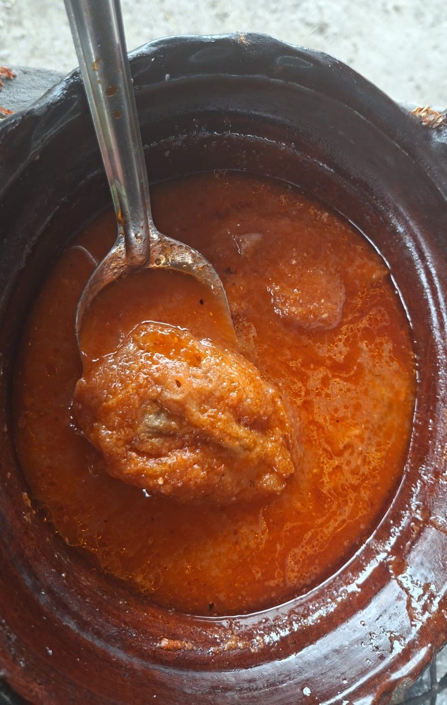

Preparamos unos chiles rellenos en caldillo de jitomate utilizando ingredientes tradicionales de la cocina mexicana. Este platillo combina el sabor suave de los chiles poblanos rellenos de queso con el toque casero del caldillo de jitomate. El resultado fue una comida deliciosa, nutritiva y representativa de la gastronomía mexicana.